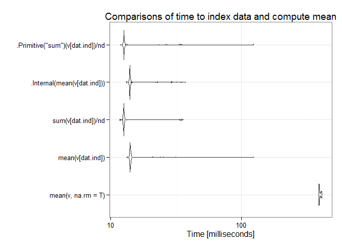
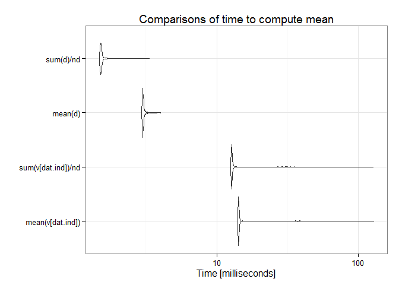

Combining sampling and data reduction methods while using the most efficient R functions can be particularly useful when processing large numbers of high-resolution geotiff raster layers. One thing I already do when extracting from many files by shapefile is I avoid extracting by shape more than once. I do it one time to obtain the corresponding raster layer cell indices. Then on all subsequent maps I extract by cell indices which is notably faster. Ultimately, there is much more room for speed improvements in terms of efficient use of statistics than in strictly programmatic corner-cutting.
The plots below benchmark different sample mean computations. Comparisons involve the sample mean of the entire data set and do not involve the main approach outlined above which focuses on efficiency gains by taking the mean of a smaller, representative sample. This provides some insight into how it is beneficial nonetheless to considering the right programmatic approach in conjunction with statistical efficiencies.
## Unit: milliseconds
## expr min lq mean median
## mean(v, na.rm = T) 330.42456 332.88923 340.87536 338.32736
## mean(v[dat.ind]) 14.08361 14.21268 15.93154 14.30753
## sum(v[dat.ind])/nd 12.52177 12.69454 14.97153 12.85843
## .Internal(mean(v[dat.ind])) 13.92438 14.14799 15.92813 14.22714
## .Primitive("sum")(v[dat.ind])/nd 12.50747 12.71008 15.68299 12.81411
## uq max neval
## 343.57206 445.83026 100
## 14.55011 29.50857 100
## 13.52864 32.33991 100
## 14.46739 29.30362 100
## 13.18172 127.07627 100
## Unit: milliseconds
## expr min lq mean median uq
## mean(v[dat.ind]) 13.991870 14.226052 16.725961 14.357294 14.983181
## sum(v[dat.ind])/nd 12.515244 12.695002 14.900060 12.817691 13.153415
## mean(d) 2.986529 3.002701 3.058836 3.016230 3.054638
## sum(d)/nd 1.502751 1.513480 1.542732 1.518923 1.533851
## max neval
## 126.787354 1000
## 122.183317 1000
## 4.819560 1000
## 2.485198 1000